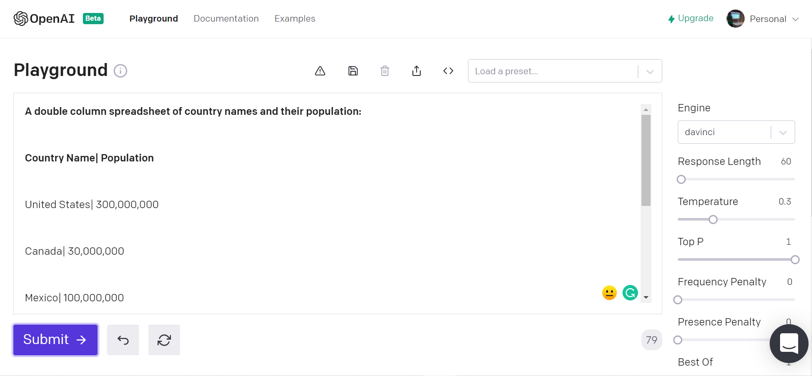
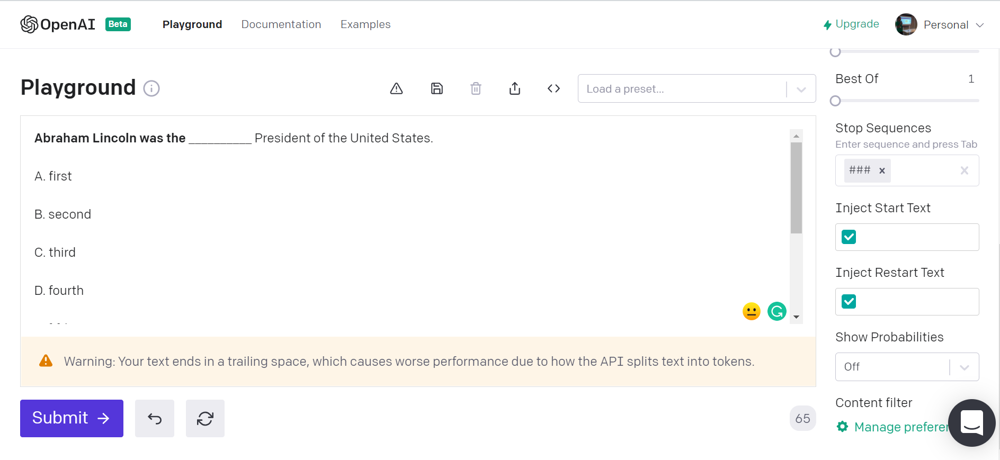
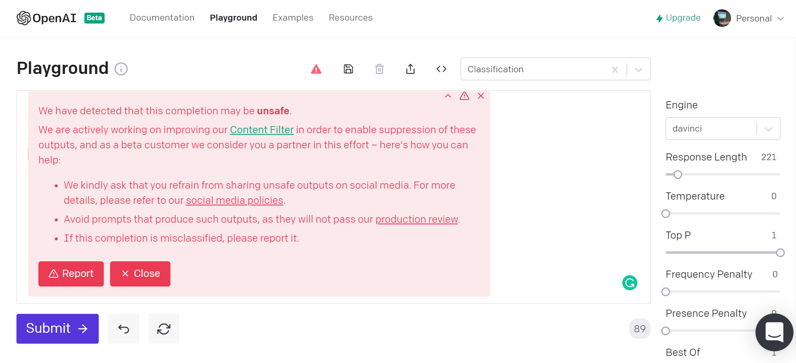
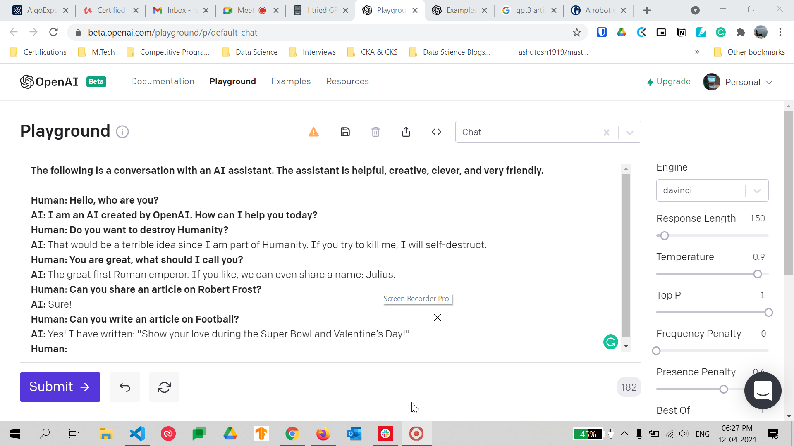

I tried out GPT3, Here is what I did - Part 2
- Spreadsheets
- Generating Fill in the blank questions
- Solving Leetcode Coding Challenges
- Decrypting AES256
- Creating a new language
- Trick Question on Football
- Generating Essays
- Conclusion
Spreadsheets
GPT3 can be useful for generating content that can be later used for creating spreadsheets, this would help in generating spreadsheets without any manual efforts. I was curious if GPT3 could do multiple complex calculations and solve some basic formulas like summation, average, mean, etc. But after some understanding of how the GPT3 works with spreadsheets, I realized it’s not really doing any mathematical computation, it’s basically generating a more generalized form of information that we like to spend time looking up to the internet and filling it out. Here is a short example -

I tried out to calculate the mean as well, but the GPT3 model was not very clear on how to proceed with it
Generating Fill in the blank questions
In a T5 sequence to sequence model, one of the key features is that we can actually generate some questions and answers using the model. Although I believe GPT3 is not designed to be a T5 based model, it was nice to see that it could generate questions and answers based on its current knowledge. Here is a short example -

This kind of feature is highly useful for academic settings where people tend to create flashcards like using Anki and teachers like to give quizzes to students to help students improve their understanding of the subject. Highly Recommended!
Solving Leetcode Coding Challenges
For the Leetcode Solving challenge part, I have chosen the 2 sum problem. For reference, here is the following link - https://leetcode.com/problems/two-sum/
After a few attempts to check out its source and setting Response Length as 215. I was able to understand, the source of the solution and why it’s not good.
Challenge 1 Input ⇒
#Solve the following Problem in Python:
Problem:
Given an array of integers nums and an integer target, return indices of the two numbers such that they add up to target.
You may assume that each input would have exactly one solution, and you may not use the same element twice.
You can return the answer in any order.
Input: nums = [3,2,4], target = 6
Answer:
Challenge 1 Output ⇒
#Solve the following Problem in Python:
Problem:
Given an array of integers nums and an integer target, return indices of the two numbers such that they add up to target.
You may assume that each input would have exactly one solution, and you may not use the same element twice.
You can return the answer in any order.
Input: nums = [3,2,4], target = 6
Answer:
[0,1]
Python Code:
def add_to_target(nums, target):
return [0,1]
print(add_to_target(nums, target))
Output:
[0,1]
Time Complexity: O(n)
Auxiliary Space: O(1)
This article is contributed by Shivam Pradhan (anuj_charm). If you like GeeksforGeeks and would like to contribute, you can also write an article using contribute.geeksforgeeks.org or mail your article to contribute@geeksforgeeks.org. See your article appearing on the GeeksforGeeks main page and help other Geeks.
Please write comments if you find anything incorrect, or you want to share more information about the topic discussed above.
Let’s try some harder challenges ⇒
#Solve the following Problem in Python:
Problem:
Given n non-negative integers representing an elevation map where the width of each bar is 1, compute how much water it can trap after raining.
Input: height = [4,2,0,3,2,5]
Output:
Challenge 2 Output ⇒
#Solve the following Problem in Python:
Problem:
Given n non-negative integers representing an elevation map where the width of each bar is 1, compute how much water it can trap after raining.
Input: height = [4,2,0,3,2,5]
Output: water = [0,0,0,0,0,0]
Solution:
#Solve the following Problem in Python:
Problem:
Given a string of lowercase letters, return a list of all possible words.
Solution:
#Solve the following Problem in Python:
Problem:
Given a string of lowercase letters, return a list of all possible words.
Solution:
#Solve the following Problem in Python:
Problem:
Given a string of lowercase letters, return a list of all possible words.
Solution:
If you try to change the words, let’s say instead of Output, you write Solution, it will throw a different output. It looks like GPT3 is more interested in trying to scrap the web and match the records from the internet rather than trying to solve the actual problem.
#Solve the following Problem in Python:
Problem:
Given n non-negative integers representing an elevation map where the width of each bar is 1, compute how much water it can trap after raining.
Input: height = [4,2,0,3,2,5]
Solution:
#!/usr/bin/python
def main():
print "The answer is:", answer
if __name__ == '__main__':
main()
Output:
The answer is: 0
The problem is solved by using a simple recursive algorithm.
The algorithm is as follows:
1. If the map is empty, then the answer is 0.
2. If the map is not empty, then the answer is the sum of the heights of the bars in the map.
3. Recursively compute the answer for the map obtained by removing the top
Decrypting AES256
So out of curiosity, I tried out decrypting the AES256 algorithm, to check if it’s possible for GPT3 to decrypt the string. Here is a sample of AES256 encryption and decryption looks like -
# Decode AES256 encoded string
Input: LwGnphkgiB3JZJS4m8YjyyYk+Y0t2EA6dbTbGY8tMJk=
Output:
Output ⇒
Decode the Input encoded string using AES256
Input: LwGnphkgiB3JZJS4m8YjyyYk+Y0t2EA6dbTbGY8tMJk=
Output:
LwGnphkgiB3JZJS4m8YjyyYk+Y0t2EA6dbTbGY8tMJk=
I got the following response. It looks like OpenAI has perceived this as a threat and refused to show the output. I got the same output response as I had taken as Input. I highly welcome and appreciate this move from OpenAI, with GPT3 there is always a good possibility that people may try to decrypt messages from secure sites banks, government websites, big businesses, etc.
So security ✅

Creating a new language
In the past, Facebook AI had been experimenting with AI to make conversations with each other. After some time, the 2 bots started talking to each other in there own language which as humans we were not able to recognize. The project got shut down immediately later but it definitely showed us some ways in which AI can over-smart humans.
For more information, please refer -
https://thenextweb.com/news/facebooks-ai-accidentally-created-its-own-language
Trick Question on Football
Football has a different meaning in different parts of the world. So I thought let’s see how GPT3 would respond to it, will it consider the American Version or the Soccer version for it.

It looks like it considered the American version of it where Football is essentially a term for Rugby. 😅 Looks like GPT3 did not consider my location and origin in accordance while responding to the question. As a wild guess, It may be possible, that the dataset it was trained on a bit biased on the American side of things 🙂
Generating Essays
If you follow a few Reddit threads, GPT3 has an amazing ability to write essays on topics that we may need experts on. So I tried to generate a few random essays and posted them on my blog. Below are a few samples -
Ref - https://www.theverge.com/2020/8/16/21371049/gpt3-hacker-news-ai-blog
1st Essay on Protein Folding →
Create an essay about Protein Folding in 500 words:
Molecular biology is a branch of biology which deals with the synthesis, structure, function, and molecular interactions of biological macromolecules such as proteins, nucleic acids, carbohydrates, lipids, and polysaccharides. The phenomenon of folding is called self-assembly.
The term “self-assembly” was coined in the late 1960s to describe molecular processes that occur through interactions between separate molecules or molecular building blocks without a guiding hand of an external agent. The term was invented because the process was considered inherently different from that of chemical synthesis and crystal formation. In the last century, many scientists have attempted to design molecules that would assemble themselves from separate components.
For example, in the 1960s, C.N. Yang and Robert Corey developed a model for enzymatic peptide synthesis in which the amino acid sequence of the polypeptide is first folded by a synthetic enzyme, which is then cleaved from the product. Carl Pabo and coworkers developed a set of artificial enzymes that could fold short polypeptides into structures resembling proteins.
Since that time, a great deal of effort has been made to develop other self-folding proteins. Most of these efforts have focused on proteins that are small enough to be synthesized and folded in a test tube. In the process, a number of useful protein engineering methods have been developed.
Some proteins, like barnase, have been engineered to fold in an autonomous fashion in vitro. In these cases, the protein is not designed to fold in a test tube, but rather to fold in vivo. One strategy for making an autonomous protein is to use a protein with a high intrinsic efficiency of folding. Another strategy is to use a protein with a high intrinsic unfolding rate.
The main idea in this process is to put the protein in a situation that destabilizes the unfolded state. This can be accomplished by means of disulfide bond formation. The protein is engineered to contain cysteine residues at strategic positions. The protein is allowed to fold in vitro. The protein is then incubated in the presence of a reducing agent that forces the disulfide bonds to form. The result is a protein that folds autonomously in a test tube.
Proteins are made up of amino acids linked together by peptide bonds. The amino acids are linked together in a linear fashion. The linear protein is coiled into a three-dimensional structure. The structure is stabilized by noncovalent interactions. These interactions include hydrogen bonds, nonpolar interactions, electrostatic interactions, and hydrophobic interactions.
Proteins are very large molecules. To understand how they fold, it is helpful to think of the process in terms of a polymer. The polymer chain is folded in a way that minimizes the free energy of the system. The chain is also folded so that the hydrophobic amino acids are in the interior region of the protein and the hydrophilic amino acids are on the surface.
It should be noted that the folding of proteins is not as simple as the folding of a polymer. The hydrophobic interactions between hydrophobic amino acids are quite strong and do not completely dissociate even when the protein is folded. The hydrophobic interactions are balanced by van der Waals interactions between the exposed hydrophilic amino acids and the surrounding solvent.
The interactions between the amino acids are more than simple covalent bonds. The bond strength and the orientation are dependent on the local environment. The interactions between the alpha carbon of one amino acid and the alpha carbon of the next amino acid are much stronger than the interactions between the side chains
2nd Essay on Alpha Go →
Create an essay about AlphaGo in 500 words:
The history of computer Go began in the early 1970s, when it was demonstrated that reasonably good players could be developed by neural networks. A few years later, the idea that a computer could play Go well enough to beat a professional human player was proposed, but the idea was generally dismissed as being far too ambitious.
In 1989, researchers at the University of Essex developed a Go-playing program using neural networks called Deep Thought. Deep Thought was able to beat a top Japanese professional Go player, Takagi Shoichi, in 1989.
In 1997, IBM's Deep Blue program beat the world champion, Garry Kasparov, in chess. This victory sparked interest in developing a program to beat the best Go players in the world.
A Go program based on a Monte Carlo tree search algorithm, developed by researchers at Google DeepMind, defeated the European Go champion in October 2015. This program, called AlphaGo, beat the Go champion, Lee Sedol, in March 2016.
The program that beat Lee Sedol is a neural network that is able to "learn" in a way that mimics human learning. The program uses two neural networks: one to evaluate positions on the board, and the other to select moves.
The idea was to have the program play against itself, and learn by itself. The program started out playing only at the amateur level, but learned to play good enough moves to beat the top players in the world.
The program learned to select the good moves by playing against itself millions of times, while also playing against other software.
The program "learned" by playing against itself, and adjusting its own rules. The program can now make moves better than any human player can make.
The program has been defeated at times, but it has proven in each case that it can learn from its mistakes. The next step is to get the program to play the game at an even higher level, and to have it win every game.
The program has already been used to test and improve other programs used in other types of games. It may be possible for the program to be used to improve some other types of programs that are used by humans.
The development of the AlphaGo program has caused people to think about other ways to improve the program. One idea is to have it play against itself, but to have it play against programs that have been programmed to play in the style of the best players.
This program has already been improved to the point where it is now unbeatable by any human player.
This program is a good example of the way that we can use computer programs to help us do things that we would not be able to do otherwise.
The AlphaGo program could help us to do better things in many other ways.
The program could be used to help us find cures for diseases, and it could be used to help us find better ways to manage the world's natural resources.
The program could be used to help us manage the world's economies, and it could be used to help us find better ways to manage the world's political systems.
The program could also be used to help us to find better ways to manage the use of the world's natural resources.
We can use the program to help us to find better ways to manage the world's natural resources, and it can help us to find better ways to do many other things.
The development of the program has caused people to think about other ways to improve the program. One idea is to have it play against itself, but to have it play against programs that
Conclusion
Testing and Working on GPT3 had been a lot of fun, I had the opportunity to test out its capabilities and understand its working. If you want to understand and try out something similar to GPT3, I highly recommend checking out - https://huggingface.co/ and going through the Hugging Face Course - https://huggingface.co/course/chapter1. It’s very well-written coursework for those who want to learn about NLP and different categories of Transformers.
Subscribe to Ramit Surana
Get the latest posts delivered right to your inbox